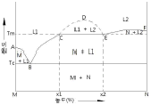

방사선비파괴검사기능사 (2005-10-02 기출문제)
1과목: 방사선투과시험법
1. 압연한 판재의 라미네이션(lamination)을 찾아낼 수 있는 가장 좋은 비파괴검사법은?
- 방사선투과시험
- 초음파탐상시험
- 침투탐상시험
- 자분탐상시험
(정답률: 알수없음)

2. 방사선투과시험시 암실에 비치하여야 할 최소한의 기기들만으로 구성된 것은?
- 현상탱크, 세척탱크, 암등, 싱크대
- 현상탱크, 필름보관함, lr-192저장함, 암등
- 압력탱크, 싱크대, 암등, 필름보관함
- 세척탱크, 싱크대, 암등, lr-192저장함
(정답률: 알수없음)
3. 다음 특수방사선투과검사법 중에서 검사시간이 가장 짧게 걸리는 것은?
- 형광투시검사
- 미시방사선투과검사
- 전자방사선투과검사
- 제로래디오그래픽
(정답률: 알수없음)
4. 비파괴검사의 목적에 대한 설명으로 옳지 않은 것은?
- 제품의 신뢰성을 향상시킨다.
- 생산공정에서 제조 기술을 향상, 개량시킨다.
- 제조원가를 절감하는데 일조한다.
- 생산할 제품의 공정시간을 단축시킨다.
(정답률: 알수없음)
5. 초음파탐상시험에서 표준이 되는 장치나 기기를 조정하는 과정을 무엇이라 하는가?
- 경사감탐상
- 보정
- 감쇠
- 상관관계
(정답률: 알수없음)
6. 다음 중 연 X-선의 특성은?
- 투과력이 약하고 파장이 길고 반가층이 얇다.
- 투과력이 크고 파장이 길고 반가층은 크다.
- 투과력이 약하고 파장이 짧고 반가층은 얇다.
- 투과력이 크고 파장이 짧고 반가층은 크다.
(정답률: 알수없음)
7. 양극이 텅스텐(원자번호74)으로 된 X선관에 400kV의 전압을 걸어 주었을 때의 X선 전환능률은?
- 2.96%
- 1.48%
- 0.75%
- 0.14%
(정답률: 알수없음)
8. X선관의 구조물에 관한 설명으로 틀린 것은?
- 양극 후드의 극의 수명을 연장해 준다.
- 집속통은 음전자의 확산을 방지하여 준다.
- 창은 X선의 흡수가 적은 물질로 되어 있다.
- 실효 초점의 크기는 핀홀 사진으로 측정할 수 있다.
(정답률: 알수없음)
9. 방사선투과시험에서 노출선도에 의한 투과촬영시 다음 중 고려하지 않아도 되는 것은?
- 피사체의 재질
- 관전압 및 관전류
- 결함의 종류
- 필름 및 증가지의 종류
(정답률: 알수없음)
10. 저감도 금속박 증감지용 필름에 관한 설명 중 틀린 것은?
- 형광증감지를 사용했을 때보다 노출시간이 짧아진다.
- 입상성이 초 미립자이다.
- 높은 콘트라스트를 얻을 수 있다.
- 정밀 검사에 적합하다.
(정답률: 알수없음)
11. X선관의 내부를 고진공으로 유지하는 이유가 아닌 것은?
- 전극간의 전기적 절연 유지
- 필라멘트의 산화 및 연소 방지
- 고속도 전자의 에너지 손실 방지
- 양극의 과열 방지
(정답률: 알수없음)
12. X선발생장치를 핀홀판으로 초점상을 촬영하는 주 이유는?
- 초점의 위치결정
- 초점의 크기 결정
- 조사면의 선량분포
- X선의 에너지 분포
(정답률: 알수없음)
13. 주조물의 방사선투과검사에서 나타나지 않는 결함은?
- 핫티어(hot tear)
- 콜드셧(cold shut)
- 편석(segregation)
- 언더컷(undercut)
(정답률: 알수없음)
14. X선 발생장치의 주요 구성 3요소로 올바른 것은?
- X선관, 고전압발생기, 제어기
- X선관, 필라멘트, 정류기
- 표적(타게트), 제어기, 라디에이터
- 표적(타게트), 전류제어기, 조리개
(정답률: 알수없음)
15. 방사선 투과사진에서 작은 결함을 검출할 수 있는 능력을 나타내는 용어는?
- 투과사진의 농도
- 투과사진의 분해능
- 투과사진의 감도
- 투과사진의 대조도
(정답률: 알수없음)
16. 자분탐상시험시 시험체 표면의 오염물 중 증기 세척법으로 제거할 수 있는 것 중 대표적인 것은?
- 오일이나 그리스 등 유기물 불순물
- 녹
- 진공 증착된 부분을 벗겨낼 때
- 기계 가공된 원형 자국
(정답률: 알수없음)
17. 다음 중 투과사진의 명암도에 가장 큰 영향을 주는 산란선은?
- 후방산란선
- 내면산란선
- 측면산란선
- 전방산란선
(정답률: 알수없음)
18. 그래프에서 300mAㆍsec의 노출조건으로 A타입 필름의 농도가 1.0이 되었다. B타입의 필름으로 사진농도가 1.0이 되려면 노출조건은?
- 1mAㆍsec
- 10mAㆍsec
- 100mAㆍsec
- 1000mAㆍsec
(정답률: 알수없음)
19. 형광증감지의 특징을 바르게 설명한 것은?
- 연박 증감지보다 증감율이 낮다.
- 연박 증감지보다 노출시간이 짧아진다.
- 연박 증감지보다 산란선 저감효과가 나쁘다.
- 연박 증감지보다 콘크라스트가 높다.
(정답률: 알수없음)
20. 방사선투과시험에 사용되고 있는 lr-192 동위원소의 양성자 수는?
- 76
- 77
- 86
- 87
(정답률: 알수없음)
2과목: 방사선안전관리 관련규격
21. 두께차가 심한 시험체일 때 만족할 만한 방사선 투과사진을 얻기 위한 방법으로 적당한 것은?
- 두께가 다른 앞, 뒤 스크린사이에 필름을 넣어 노출한다.
- 노출속도가 다른 2매의 필름을 넣고 동시에 노출한다.
- 동일한 2매의 필름 사이에 스크린에 겹쳐서 동시에 노출한다.
- 다른 종류의 2매의 필름사이에 스크린을 겹쳐서 동시에 노출한다.
(정답률: 알수없음)
22. 다음 중 비금속 물질의 표면을 비파괴검사할 때 가장 적합한 탐상법은?
- 침투탐상시험법
- 초음파탐상시험법
- 자분탐상시험법
- 와전류탐상시험법
(정답률: 알수없음)
23. 방사선 투과사진의 선명도(Definition)에 직접적으로 영향을 주는 것이 아닌 것은?
- 초점의 크기
- 계조계의 크기
- 스크린 재질
- 방사선질
(정답률: 알수없음)
24. 두께가 14mm인 시험체를 선원ㆍ필름간 거리 60cm, 관전압 200kVp, 노출량 4mAㆍmin로 촬영하여 사진농도 2.5의 좋은 사진을 얻었다. 다른 조건은 변하지 않고 선원ㆍ필름간 거리만 90cm로 눌렀을 때, 같은 농도의 사진을 얻으려면 노출량은 얼마로 조정해야 하는가?
- 2.7mAㆍmin
- 6.0mAㆍmin
- 9.0mAㆍmin
- 12.0mAㆍmin
(정답률: 알수없음)
25. 맞대기 용접부의 내면 기공을 비파괴검사로 검출하는데 가장 적합한 시험 방법은?
- 침투탐상시험(PT)
- 와전류탐상시험(ET)
- 누설검사(LT)
- 방사선투과시험(RT)
(정답률: 알수없음)
26. 방사선과 관계 있는 양과 단위를 표시하였다. 짝지음이 틀린 것은?
- 선량당량 - Rhm
- 조사선량 - R
- 방사능 - Ci
- 흡수선량 - Gy
(정답률: 알수없음)
27. KS D 0277에서 주강품의 복합 필름을 2장 포개서 관찰하는 경우 각각의 최저농도와 포갠 경우 최고 농도는?
- 최저는 0.3, 최고는 3.5
- 최저는 0.5, 최고는 3.5
- 최저는 0.8, 최고는 4.0
- 최저는 1.0, 최고는 4.0
(정답률: 알수없음)
28. KS B 0845에 의한 계조계의 종류, 구조, 치수 및 재질에 대한 설명으로 잘못된 것은?
- 계조계의 종류로는 15형, 25형, 35형이 있다.
- 계조계의 두께에 대한 치수 허용차는 ±5%이다.
- 계조계의 한 변의 길이에 대한 치수 허용차는 ±5mm이다.
- 계조계의 재질은 KS D 3503에 규정하는 강재로 한다.
(정답률: 알수없음)
29. 다음 기기 중 설명이 잘못된 것은?
- TLD(티엘디)는 개인 피폭선량 측정용이다.
- 서베이메터는 교정하지 않아도 된다.
- 동위원소 회수시 서베이메터로 관찰해야 한다.
- 포켓도시메터로 선량율을 측정해서는 안된다.
(정답률: 알수없음)
30. 어떤 방사성 동위원소로부터 5m 떨어진 곳의 선량율이 100mR/h 이었다면 10m 떨어진 곳의 선량율은?
- 50mR/h
- 0.5R/h
- 25mR/h
- 0.25R/h
(정답률: 알수없음)
31. 10밀리램(10mrem)은 몇 램(rem)인가?
- 0.001램
- 0.01램
- 0.1램
- 1램
(정답률: 알수없음)
32. 원자력법에서 규정한 “선량한도”의 설명으로 바른 것은?
- 외부에 피폭하는 방사선량에서 내부에 피폭하는 방사선량을 뺀 피폭방사선량의 상한 값을 말한다.
- 외부에 피폭하는 방사선량과 내부에 피폭하는 방사선량을 합한 피폭방사선량의 상한 값을 말한다.
- 내부에 피폭하는 방사선량에서 외부에 피폭하는 방사선량을 뺀 피폭방사선량의 하한 값을 말한다.
- 외부에 피폭하는 방사선량과 내부에 피폭하는 방사선량을 합한 피폭방사선량의 하한 값을 말한다.
(정답률: 알수없음)
33. KS B 0845에 의거 흠 상의 분류방법에서 시험시야는 어떻게 나누는가?
- 10 × 10, 10 × 20, 10 × 30
- 10 × 10, 10 × 20, 10 × 30, 10 × 50
- 10 × 10, 10 × 20, 10 × 50
- 10 × 10, 10 × 30, 10 × 50
(정답률: 알수없음)
34. KS B 0845에 의해 강판 맞대기용접부의 모재두께가 22mm인 용접부를 촬영하고자할 때 필요한 계조계의 종류는?
- 10형
- 15형
- 20형
- 25형
(정답률: 알수없음)
35. KS B 0845에 의한 투과사진의 흠의 상 분류방법을 설명한 것이다. 틀린 것은?
- 가늘고 긴 슬러그 말아 넣음은 길이를 구하였다.
- 둥근 블로홀은 흠 점수를 구하였다.
- 갈라짐은 항상 3류로 분류하였다.
- 텅스텐 말아 넣음은 흠 점수를 구하였다.
(정답률: 알수없음)
36. KS D 0242의 알루미늄용접부에 대한 투과사진의 흠집모양의 분류시 3종류의 흠집수가 연속하여 시험시야의 몇 배를 넘어서 존재하는 경우 4종류로 하는가?
- 2배
- 3배
- 4배
- 5배
(정답률: 알수없음)
37. KS B 0845에 의한 강관의 원둘레 용접이음부를 방사선투과 시험할 때 촬영방법에 따른 투과사진의 상질의 종류를 바르게 연결한 것은?
- 내부선원 촬영방법 : A급, P1급, P2급
- 내부필름 촬영방법 : A급, B급, P2급
- 2중벽 편면 촬영방법 : B급, P1급, P2급
- 2중벽 양면 촬영방법 : P1급, P2급
(정답률: 알수없음)
38. γ선 조사기에 사용하는 차폐 재료로 가장 좋은 것은?
- 철
- 우라늄
- 콘크리트
- 납
(정답률: 알수없음)
39. KS D 0242 알루미늄 평판 접합 용접부의 방사선투과시험시 선원과 투과도계 사이의 거리는 시험부의 유효길이의 몇배 인상인가? (단, 상질은 A급이다.)
- 2배
- 3배
- 5배
- 7배
(정답률: 알수없음)
40. 주강품의 방사선투과시험방법(KS-D-0227, 1996년)에 따른 촬영배치에 대해 서술하였다. 틀린 것은?
- 투과도계는 시험부의 두께변화가 적은 경우는 그 두께를 대표하는 곳에 1개를 놓는다.
- 관모양의 시험체는 원칙적으로 시험부의 선원쪽 면 위에 투과도계를 놓는다.
- 투과도계의 개수는 원칙적으로 투과사진마다 1개 이상으로 한다.
- 계조계는 원칙적으로 투과사진마다 1개 이상으로 한다.
(정답률: 알수없음)
3과목: 금속재료일반 및 용접 일반
41. 인터넷 상에서 전화를 걸 수 있는 기술을 무엇이라고 하는가?
- VolP
- VOD
- AOD
- ADSL
(정답률: 알수없음)
42. Windows에서 파일 삭제 시 휴지통에 버리지 않고 바로 삭제하려면?
- Delete 키를 누른다.
- Alt 키를 누른 상태에서 Del 키를 누른다.
- Ctrl 키를 누른 상태에서 Del 키를 누른다.
- Shift 키를 누른 상태에서 Del 키를 누른다.
(정답률: 알수없음)
43. 컴퓨터를 사용할 때 일반적으로 올바른 작업 자세가 아닌 것은?
- 손등은 팔과 수평이 되도록 유지한다.
- 무릎의 각도는 90도 이상을 유지하도록 한다.
- 키보드의 위치는 심장보다 높게 위치해야 한다.
- 화면보다 눈높이가 조금 높아 화면을 약간 아래로 보는 것이 좋다.
(정답률: 알수없음)
44. 컴퓨터가 부팅(booting)된 후에 할 수 있는 작업에 대한 설명 중 맞지 않는 것은?
- 명령 프롬프트(command prompt)에 시스템 명령을 입력 할수 있다.
- 응용 프로그램을 통해 문서를 인쇄할 수 있다.
- 컴퓨터를 꺼도 다시 부팅할 필요가 없다.
- 프로그램을 실행할 수 있다.
(정답률: 알수없음)
45. 인터넷 도메인 이름의 부여 원칙 중 기관분류 구분이 서로 틀리게 짝지어진 것은?
- go - gov
- co - com
- ac - edu
- re - net
(정답률: 알수없음)
46. 정육각기둥의 꼭지점과 위, 아래 면의 중심 그리고 정육각기둥의 형상을 하고 있는 6개의 정삼각기둥 중 1개 또는 삼각기둥의 중심에 1개씩의 원자가 있는 것은?
- 체심입장격자
- 면심입장격자
- 조밀육방격자
- 저심면방격자
(정답률: 알수없음)
47. 금속재료의 화학적 성질을 설명한 것 중 틀린 것은?
- 수소보다 이온화 경향이 적은 금속은 산에 작용하기 힘들다.
- 금속은 산과 작용해서 염을 만들고 염은 수용액중에서 전리하여 양이온이 된다.
- 이온화 경향이 큰 것은 화합물이 생기기 어렵고 화합물은 안정하다.
- 금속의 산화는 온도가 높을수록, 산소가 금속 내부로 확산 하는 속도가 클수록 빨리 진행된다.
(정답률: 알수없음)
48. 강도와 경도가 큰 순서로 맞게 짝지어진 것은?
- 마텐자이트＞트루스타이트＞소르바이트＞펄라이트＞오스테나이트
- 마텐자이트＞소르바이트＞트루스타이트＞오스테나이트＞펄라이트
- 마텐자이트＞트루스타이트＞오스테나이트＞펄라이트＞소르바이트
- 마텐자이트＞소르바이트＞펄라이트＞트루스타이트＞오스테나이트
(정답률: 알수없음)
49. 6.67%의 C(탄소)를 포함되었을 때 C와 Fe의 화합물은?
- 시멘타이트
- 페라이트
- 오스테나이트
- 마텐자이트
(정답률: 알수없음)
50. 공석강의 탄소함유량은 약 얼마인가?
- 0.15%
- 0.8%
- 2.0%
- 4.3%
(정답률: 알수없음)
51. 우라늄과 토륨은 무엇으로 사용하는가?
- 강의 탈산제
- 구리 합금
- 도장 재료
- 원자로용 1차 금속
(정답률: 알수없음)
52. 그림의 상태도에서 E점에서의 반응점은?

- 공정점
- 포석점
- 편정점
- 편석점
(정답률: 알수없음)
53. 샤르피 충격시험으로부터 알 수 있는 연성-취성, 천이현상에 대한 설명으로 맞는 것은?
- 체심입방정(BCC) 금속에서 잘 나타나지 않고, 면심입방정(FCC) 금속에서 잘 나타난다.
- 흡수에너지나 파면을 관찰하여 알 수 있다.
- 천이온도보다 낮은 온도에서 연성파괴가 일어난다.
- 결정립이 미세할수록 천이온도가 높아진다.
(정답률: 알수없음)
54. 모넬메탈, 양백 등의 납땜에 가장 많이 사용되는 것은?
- 금납
- 은납
- 황동납
- 철납
(정답률: 알수없음)
55. 단면적이 2cm2의 철구조물이 5,000kgf의 하중에서 균열이 발생될 때의 압축응력(kgf/cm2)은?
- 1,000 kgf/cm2
- 2,500 kgf/cm2
- 3,500 kgf/cm2
- 4,000 kgf/cm2
(정답률: 알수없음)
56. 담금질의 주 목적을 설명한 것은?
- 강을 Ac3-Ac1점 이하의 저온에서 서냉시키고 A1변태를 중지시켜 인성을 저하시킨다.
- 강을 Ac3-Ac1점 이상의 고온에서 서냉시키고 A1변태를 중지시켜 경도를 저하시킨다.
- 강을 Ac3-Ac1점 이하의 저온에서 급냉시키고 A1 중지시켜 인성을 증가시킨다.
- 강을 Ac3-Ac1점 이상의 고온에서 급냉시키고 A1 중지시켜 경도를 증가시킨다.
(정답률: 알수없음)
57. 철강에서 철 이외의 5대 원소는?
- 질소, 황, 인, 망간, 크롬
- 수소, 황, 인, 구리, 규소
- 탄소, 규소, 망간, 인, 황
- 수은, 규소, 니켈, 황, 인
(정답률: 알수없음)
58. 다음 중 일반적인 가스용접 작업에 가장 적합한 범위인 차광유리(Filter Glass)의 차광도 규격번호인 것은?
- 2 ~ 3
- 4 ~ 7
- 7 ~ 9
- 9 ~ 12
(정답률: 알수없음)
59. 비금속 개재물이 원인이며 모서리, T이음 등에서 볼 수 있는 것으로 강의 내부에 모재 표면과 평행하게 층상으로 발생하는 균열은?
- 라미네이션
- 델라이네이션
- 라멜라테어
- 재열균열
(정답률: 알수없음)
60. 저수소계 용접봉의 건조온도 및 시간으로 다음 중 가장 적당한 것은?
- 70 ~ 100[℃]로 1시간 정도
- 70 ~ 100[℃]로 2시간 정도
- 300 ~ 350[℃]로 1시간 정도
- 300 ~ 350[℃]로 2시간 정도
(정답률: 알수없음)